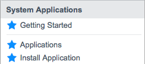
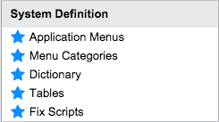

Applications
| |
Note: This article applies to Fuji. For more current information, see Applications at http://docs.servicenow.com
The Wiki page is no longer being updated. Please refer to http://docs.servicenow.com for the latest product documentation. |
1 Overview
Applications represent packaged solutions for delivering services and managing business processes. The ServiceNow platform offers several standard applications, such as Incident, Problem, and Change. Administrators can also develop and manage custom applications to meet business needs. When building applications on the ServiceNow platform, application developers can take advantage of existing platform features such as security access controls, workflow, reporting, and notifications as well as existing public data such as user and task records.
| |
Note: Applications have changed significantly with the Fuji release. To develop applications on earlier versions should see Applications - Versions Prior to Fuji instead. |
2 Parts of an Application
{kind=link}
An application consists of the following components:
- Custom application record
- Application scope
- Application data tables
- Application files
- Application dependencies
2.1 Custom Application Record
The custom application record defines and identifies an application and all of its associated artifacts. It is similar to a system dictionary record for a table or column in that it stores the most current configuration of an application.
A custom application record tracks all the configuration records associated to a particular application, and each configuration record is only assigned to one application at a time. When the application is ready for distribution, share it with other instances in the company or publish it to the ServiceNow Store (starting with the Fuji release).
For more information, see Creating a Custom Application.
2.2 Application Scope
By default, all custom applications have a private scope that uniquely identifies them and their associated artifacts with a namespace identifier. The application scope prevents naming conflicts and allows the contextual development environment to determine what changes, if any, an application developer or an API call can make to an application artifact. Application developers specify an application's scope when they create it. For more information, see Application Scope.
Application scope is available for new and upgraded instances starting with the Fuji release.
2.3 Application Data Tables
Data tables store application-specific data and provide a UI for users to access this data. Application developers create data tables and their associated lists and forms for application users to add and update records. An application owns its data tables and determines whether other applications can access resources from these tables. For example, the Book Rooms application might store conference room data in the Conference Rooms [x_acme_book_rooms_conference_rooms] table.
The system controls access to data tables from the user interface using standard access control rules. By default, the application creation process restricts access to application data tables by requiring users to have an application-specific user role. The system controls access to data tables from APIs and script calls using the application access settings for the table (starting with the Fuji release).
2.3.1 User Interface Elements
The system automatically creates a list and form view for each application data table. Application developers can use the standard system processes to lay out these lists and forms to add views, fields, and sections as needed. They may also want to create custom menus, modules, or UI pages to allow users to find, add, and modify the information they need. For more information, see Administering Application Menus and Modules or UI Pages.
2.3.2 Application User Roles
Application developers can create application-specific user roles to control access to application data. Application developers can create an end user role for the primary users of a custom application. The system automatically creates the following configuration records to restrict access to application data:
- Standard record operations on application tables are restricted to the application user role or the admin role.
- Create
- Read
- Write
- Delete
- The application menu is restricted to the application user role or the admin role.
- All application modules are restricted to the application user role or the admin role.
Application developers can create additional user roles as needed to support the application data model but must manually create any associated access controls, menu role requirements, or module role requirements.
2.3.3 Web Services Integrations
Application developers can create web services integrations to application data tables. By default, the system allows other applications to access application data tables using web services integrations. Application developers can allow or restrict web services access from the table record's application access settings (starting with the Fuji release).
2.4 Application Files
Application files are configuration records that allow application developers to extend application functionality. Application developers create application files when they add application logic such as business rules, workflows, and script includes. An application does not own the application file tables it uses; rather it owns the records (files) within these tables. For example, adding a business rule to check for available rooms from the Conference Room table adds an application file to the Business Rule [sys_script] table. Application developers can view the complete list of application files from the custom application record.
For more information, see Application Files.
2.5 Application Access Settings
Application developers can use table application access settings to allow or prevent the creation of application files for their application tables. For more information, see Application Access Settings.
Application developers can also protect script-based application files by making them read-only or hiding them from application users. For more information about scripting options, see Scripting in Scoped Applications.
Controlling access to application files is available starting with the Fuji release.
2.6 Application Dependencies
Every custom application record includes a related list identifying its dependencies on other applications and tables. Administrators can review this list to determine if an application poses any risk to existing processes or data. Application developers can use this list to ensure that their applications have the proper access to other applications.
The Dependencies related list is available starting with the Fuji release.
3 Contextual Development Environment
The platform is a contextual development environment that:
- Displays the currently selected application.
- Identifies the scope of every application artifact.
- Prevents any changes that violate the access settings for an application.
3.1 Determining the Application Context
When application developers create new records, the system automatically assigns the records to the currently selected application in the application picker.
When application developers attempt to change existing records, the platform checks whether the currently selected application matches the scope of the application artifact. If they match, the application developer can save changes to the artifact. If they differ, the system makes the following changes to the user interface:
- Makes all the fields on the current record read-only.
- Displays a warning message that the application artifact belongs to another scope.
3.2 Applications List
The applications list allows application developers to:
- View and select the applications.
- Developed: lists applications created on this instance.
- Downloaded: lists applications installed on this instance.
- Update installed applications.
The applications list is available from the System Applications menu (starting with the Fuji release). For more information on using the applications list, see Managing Applications.
3.3 Application Picker
The application picker allows application developers to view and select the application where their changes apply. The application picker is available from the system menu under the gear icon in the banner frame.
{kind=link}
For more information on using the application picker, see Managing Applications.
3.4 Warning Messages
The platform displays a warning message whenever a user attempts to edit an application artifact belonging to a different application.
{kind=link}
This message can be used to:
- Open the custom application record of the application that contains this configuration record.
- Open the custom application record of the application that is currently selected in the application picker.
- Change the application selected in the application picker to the application that contains this configuration record.
The system also displays a warning message when a user attempts to configure a list or form layout while working from another application scope.
{kind=link}
The warning message provides a list of valid options:
- Create a new section.
- Select an existing section in the current application.
- Switch applications.
3.5 Application Versioning
Each installed application has a version as defined by its application developer in the custom application record. The system uses this version information to determine if there are updates available from the ServiceNow application repository or ServiceNow Store (starting with the Fuji release).
3.6 Application Resource Throttling
The system uses a set of transaction quotas to limit the resources that any one custom application can consume. These limits are intended to prevent custom applications from exhausting instance resources and causing an outage.
By default, the following transaction quota limits apply to custom applications (starting with the Fuji release).
| Resource type | Transaction quota limit |
|---|---|
| Business Rules (foreground) | 5,000 |
| Events (foreground) | 5,000 |
| Jobs (foreground) | 5,000 |
| Outbound HTTP requests (foreground) | 10 |
| Outbound HTTP request duration (foreground) | 100 seconds |
3.7 Script Protection Policy
Application developers have the following options to protect their custom application script includes:
- Fully editable: allows administrators to modify application script includes on their instance. This allows an application to be customized to meet particular business needs.
- Read-only: allows application developers to protect application script includes from changes while still allowing administrators to see how certain business logic is handled.
- Protected: allows application developers to fully protect application script includes by hiding and encrypting all script fields.
For more information, see Scripting in Scoped Applications.
4 Managing Applications
Application developers can manage applications by:
- Sharing them with other instances
- Removing applications
4.1 Sharing Applications
Application developers can share applications using one of the following methods.
| Application sharing method | Makes it available to | Typical use case | Availability |
|---|---|---|---|
| Publish internally to the company's instances | All instances assigned to the same company | Transfer the latest application version to a test or production environment. | Fuji release |
| Publish to the ServiceNow Store | All ServiceNow customers | Share or sell applications to other companies. | Fuji release |
| Publish to an update set | Any instance with access to the update set file | Save a version of an application for compliance or backup reasons. | All releases |
| Push to team development instances | Other instances in the team development environment | Push developer changes to the parent instance. | Dublin release |
For more information on sharing methods, see Sharing Applications.
4.2 Removing Applications
Administrators have the following options to remove unwanted applications:
- Delete applications during development.
- Deactivate applications and retain their data.
- Uninstall applications and choose whether to retain their data.
For more information, see Managing Applications.
4.3 ServiceNow Applications
The system manages applications provided by ServiceNow separately from custom applications (starting with the Fuji release). Applications provided by ServiceNow are in the global scope and cannot be downloaded or updated from the application repository or ServiceNow Store. Instead, the system tracks changes to these applications in the upgrade history.
Administrators can see the active and available applications provided by ServiceNow from the list of plugins.
5 Menus and Modules
Use these modules to access common features for building and managing custom applications.
|  | Under the System Applications menu:
|
|  | Under the System Definition menu:
|
{kind=link}
{kind=link}
6 Enhancements
6.1 Fuji
- Improves application development by enforcing strong application boundaries to ensure that one application does not negatively impact another.
- Identifies each application with a unique namespace to prevent unintended cross-application conflicts by providing a Scope field in the application record to uniquely identify applications.
- Provides an Application field in the form view of every configuration record to support creating applications with scope protection. This change applies even to customized form views.
- Enforces design and runtime protections to prevent unintended cross-application conflicts.
- Enables application developers to identify application dependencies and prevent licensing conflicts.
- Supports the creation of scoped applications by providing a contextual development environment.
- Allows application developers to easily identify and switch to the application that owns an application file.
- Allows application developers to specify a version when publishing updates to an application.
- Allows administrators to restrict the system resources available to applications, such as the number of jobs created or events fired, to ensure they do not degrade instance performance.
- Allows application developers to restrict access to s scripts and data for their application.
- Restricts update sets to one application to prevent unintentional changes to other applications.
- Supports scoped applications with a new table structure.
- Provides additional ways to create applications, such as creating an application from an existing service or starting with a template.
- Provides an Applications module to replace the Custom Applications module.
- Allows administrators to retain application data when uninstalling or deleting applications.
- Replaces the ability for administrators to restore deleted applications, files, and fields with the ability to reinstall applications.